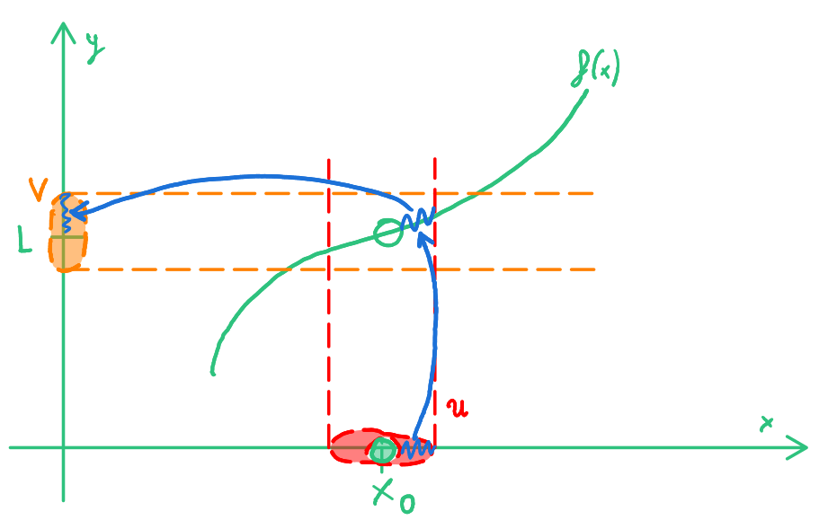
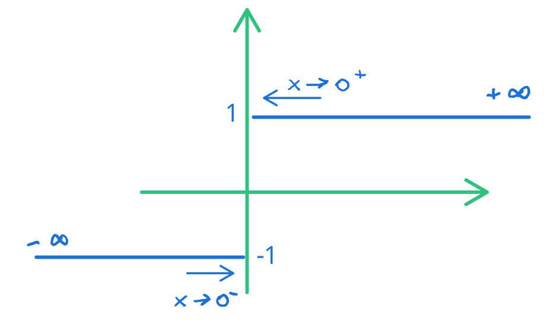
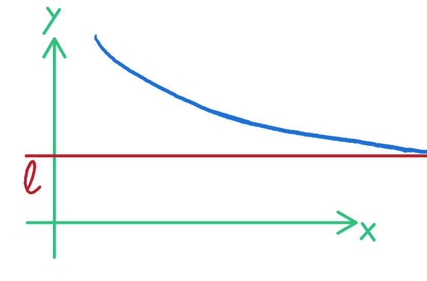
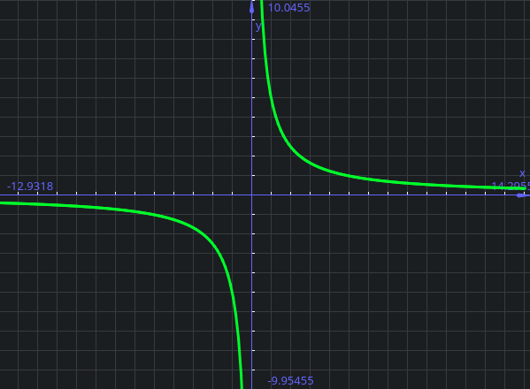
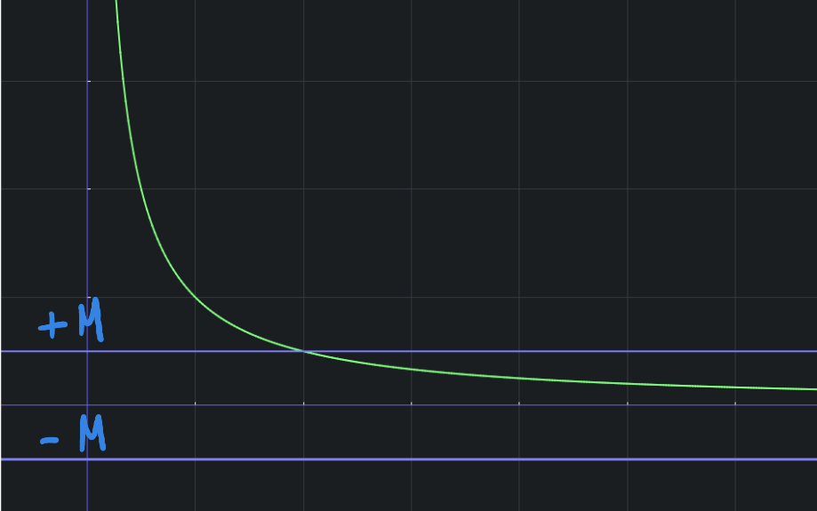
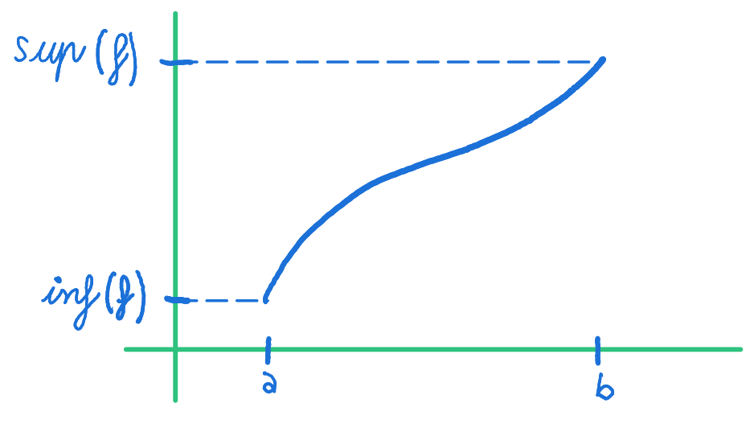
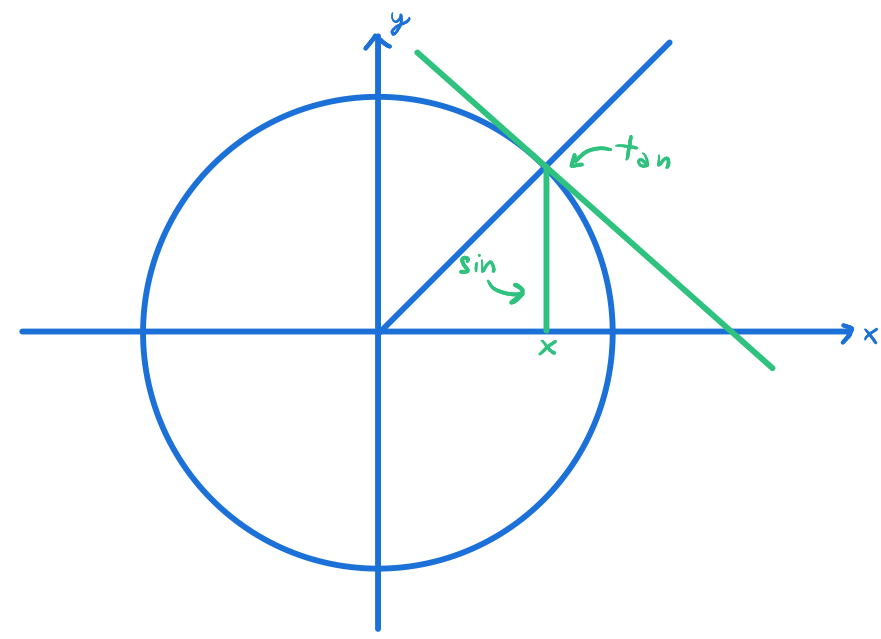
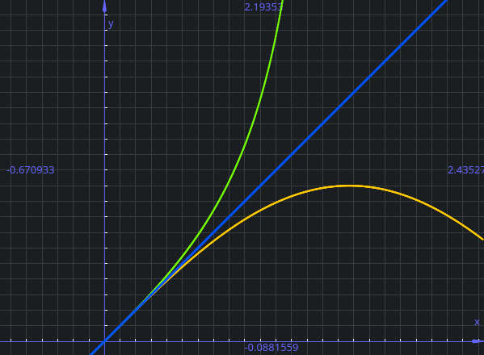
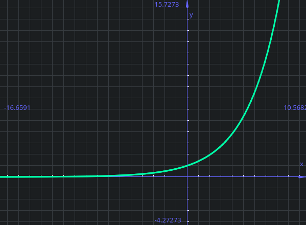
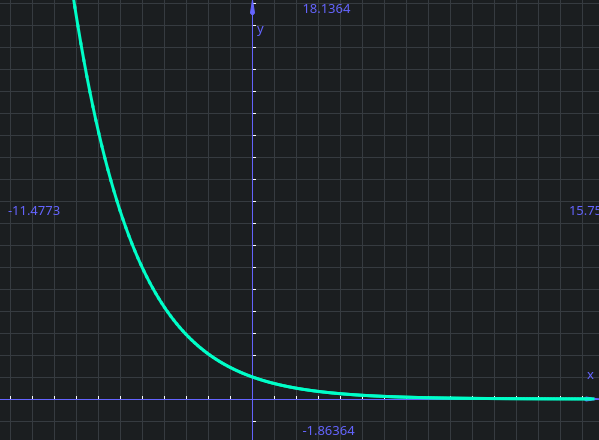

Limiti
Limite
Dato l'insieme \(A \subset \reals\), la funzione \(f: A \rightarrow \reals\) ed \(x_0\) punto di accumulazione per A,
\(L \in \bar \reals\) è il limite per x che tende a \(x_0\) di \(f(x)\) (scritto \(\lim_{x \rightarrow x_0} f(x) = L\) )
se \(\forall V\) intorno di \(L\) (ovvero sull'asse delle y) esiste \(u\) intorno di \(x_0\) (il punto sulle x) tale che \(x \in u \cap A \backslash \{x_0\} \Rightarrow f(x) \in V\)
Quindi un x nell'intorno di U (e nel dominio della funzione), ma diverso dal punto \(x_0\), "finisca" nell'intorno V di L, sull'asse delle y)

Questo significa che, dato un punto \(x_0\) ed \(L=f(x_0)\), quando mi muovo intorno ad \(x_0\) vado a finire in un intorno di L.
In tutto ciò NON ci interessa quanto vale la funzione nel punto \(x_0\)!
Come per la continuità, prendiamo un intorno V di L e mi domando se esiste un intorno di \(x_0\) tale che la funzione nell'intorno di \(x_0\) va a finire nell'intorno di L determinato prima.
Detto in un altro modo:
Il limite può essere di un punto NON appartenente al dominio, basta sia di accumulazione
Nella definizione di limite non serve che \(x_0\) sia nel dominio della funzione.
Basta che sia un punto di accumulazione per il dominio (ovvero, un punto nel dominio o "appiccicato" al dominio).
Questa definizione vale quando \(x_0\) e \(L\) sono nei reali, che quando sono \(\pm \infty\)
Dimostrazione della definizione con \(x_0\) ed \(L\) \(\in \reals \cup {\pm \infty}\)
L'intorno \(u\) di \(x_0\) è \(V=(x_0 - \delta, x_0 + \delta)\) come da definizione
E, sempre da definzione, \(V\) intorno di \(L\) (sulle y) è \(V= (L - \epsilon, L + \epsilon)\)
Possiamo quindi dire \(x \in u\) (con \(|x-x_0| < \delta\)) e \(f(x) \in V\) (ovvero \(f(x_0)-\epsilon < f(x) < f(x_0) + \epsilon\) )
La definizione quindi è questa:
Stavolta, \(V\) intorno di \(+ \infty\) (sulle y) è una semiretta \(V= (a, + \infty)\)
Quindi \(f(x) \Leftrightarrow f(x) > a\) (infinito è più grande di ogni numero reale a)
Quando la funzione ad infinito ha un numero nei reali, stiamo semplicemente dicendo che c'è un valore di x oltre il quale, anche se x assume un valore più grande a numero reale,
Ovviamente le stesse cose valgono anche con \(- \infty\)
Parallelismo con la continuità¶
Il concetto di limite è molto simile a quello di continuità.
La differenza principale è che:
- Nel limite non guardiamo il punto \(x_0\) ma il suo intorno.
Inoltre consideriamo solo i punti di accumulazione (quindi anche punti esterni al dominio (come 0 con la funzione \(\frac 1 x\)). Inoltre non consideriamo i punti isolati in quanto non sono di accumulazione) - Nella continuità guardiamo il valore \(x_0\) ed un suo intorno, considerando ogni punto nel domino (quindi anche i punti isolati)
Inoltre nella continuità \(x_0\) può essere uguale ad x, quindi \(x_0 = x \Rightarrow f(x) - f(x_0) = 0\)
La definizione di limite e continuità infine possono essere viste compatibili se (oltre al requisito \(x \ne x_0\)) si scambiano tra di loro L ed \(x_0\)
Teorema dell'unicità del limite¶
Teorema dell'unicità del limite
Se il limite esiste, allora è unico.
Questo perché dire che una funzione tende ad un valore \(L_1\) per x che tende a \(x_0\) significa che si avvicina a quel valore quando x si avvicina a \(x_0\), quindi non può tendere contemporaneamente ad \(L_2\) perché non può avvicinarsi a due valori distinti contemporaneamente.
Limiti destri e sinistri¶
Definzione di limite destro e sinistro
\(A \subset \reals, x_0 \in Acc(A), x_0 in \reals\)
\(f: A \rightarrow \reals\), l in \(\bar \reals\) è il limite di f(x) per x che tende a \(x_0\) da destra e si scrive
Se \(\forall V\) intorno di l esiste \(\delta >0\) tale che \(x_0 < x < x_0 + \delta, x \in A \Rightarrow f(x) \in V\).
Qui si possono notare due cose:
- Il fatto che x sia diverso da \(x_0\) si può osservare dall'uso del minore stretto (quindi non mi interessa neanche in questo caso quanto vale la funzione del punto)
- Il motivo per il quale \(x_0\) è finito (in \(\reals\)) è perché non ha senso avvicinare \(+\infty\) da destra
Da sinistra, se \(x_0 - \delta < x < x_0, x \in A \Rightarrow f(x) \in V\)
Questo significa che nella definizione di limite, si considerano solo i "mezzi intorni" a desta o a sinistra
Esempio di limite da destra e da sinistra
Prendendo la funone \(f: (-\infty, 0) \cup (0, + \infty) \rightarrow \reals\)
Definita come
\(f(x)= \begin{cases}
-1 \text{ se } x < 0 \\
1 \text{ se } x > 0
\end{cases}\)

In questo caso, il limite per x che tende a 0 da destra di f(x) vale 1 (\(\lim_{x \rightarrow 0^+} f(x) = 1\)) e quello che tende a 0 da sinistra -1 (\(\lim_{x \rightarrow 0^-} f(x) = -1\)).
In questo caso non esiste il limite per f(x) che tende a 0, perché il limite che tende a 0 da destra è diverso dal limite per x che tende a 0 da sinistra.
Il limite esiste solo se i limiti da destra e da sinistra sono uguali
Nella definzione di limite destro si usa solo il "mezzo intorno" destro e stessa cosa con quello sinistro.
Se vengono messi insieme si ottiene la definizione di limite.
Funzione definitivamente positiva e negativa¶
Funzione definitivamente positiva e negativa
\(A \subset \reals, f: A \rightarrow \reals, x_0 \in Acc(A)\)
Si dice che \(\lim_{x \rightarrow x_0} f(x) = L^+\) (con \(L \in \reals\)), se:
- \(\lim_{x \rightarrow x_0} f(x) = L\)
- Esiste u intorno di \(x_0\) tale che \(x \in u \cap A \{x_0\} \Rightarrow f(x) > L\)
Ciò significa che la funzione "tende" al valore ma da 'sopra':

La stessa definizione vale per \(L^-\)
Esempio di limite positivo

Questo perché considerare la funzione vicino \(+ \infty\), la funzione tende a 0.
Scegliendo una semiretta (e quindi un intervallo \((a, + \infty)\)) come intorno u
\(a > 0 \Rightarrow f(x) > 0\) (in questo caso 0=l), e quindi possiamo dire che la funzione è definitivamente positiva
In questo caso a noi interessa che la funzione sia positiva in un intorno del punto di cui calcoliamo il limite
Teorema della permanenza del segno¶
Teorema della permanenza del segno
\(A \subset \reals, f: A \rightarrow \reals, x_0 \in Acc(A)\)
Se esisiste \(\lim_{x \rightarrow x_0} f(x) = L \in \bar \reals\) e \(L \ne 0\)
allora esiste un intorno u di \(x_0\) tale che se \(x \in A \cap u \{x_0\}\) allora f ha lo stesso segno di L.
[44:00]
Continuità di una funzione a destra o sinistra¶
Funzione continua a destra o sinistra
Dato \(A \subset \reals, x+0 in A, x_0 \in Acc(A)\)
Se \(\lim_{x \rightarrow x_{0^+}} f(x) = f(x_0)\), allora si dice che f è continua a destra in \(x_0\).
Se \(\lim_{x \rightarrow x_{0^0-} f(x) = f(x_0)\), allora si dice che f è continua a sinistra in \(x_0\).
Funzione continua a destra o sinistra
Riprendendo l'esempio della funzione vista prima e modificandola appena, di dà la seguente funzione:
\(f(x)= \begin{cases}
-1 \text{ se } x < 0 \\
1 \text{ se } x > 0
\end{cases}\)
In questa funzione, il limite per x che tende a \(0^+\) vale quanto la funzione a 0.
Quando la funzine presenta questo comportamento, viene detta funzione continua a destra.
Ovviamente lo stesso discorso vale anche per il discorso "a sinistra"
Teorema di confronto¶
Teorema di confronto
\(A \subset \reals, x_0 \in Acc(A), f,g: A \rightarrow \reals\)
Se esistono \(\lim_{x \rightarrow x_0} f(x) = L_1\) e \(\lim_{x \rightarrow x_0} g(x) = L_2\)
Se esiste u intorno di \(x_0\) tale che \(x \in u \cap A \backslash \{x_0\} \Rightarrow f(x) \le g(x)\), allora \(L_1 \le L_2\).
Ovvero, se si hanno due funzioni in cui nel grafico una delle due funzioni assume valori maggiori allo stesso punto, la disuguaglianza "passa" al limite. Nelle ipotesi corrette quindi:
Il teorema non funziona con minore/maggiore stretto
Se \(f(x) > g(x)\) potrei concludere che \(\lim_{x \rightarrow x_0} f(x) < \lim_{x \rightarrow x_0} g(x)\)?
No, perché prendendo ad esempio le funzioni \(g(x) = \frac 1 x\) e \(f(x) = - \frac 1 x\) su \(x > 0\), entrame le funzioni tendono a 0; ed ecco che una disuguaglianza stretta diventa debole.
Quindi \(f(x) < g(x) \Rightarrow \lim_{x \rightarrow x_0} \lim_{x \rightarrow x_0} f(x) \le \lim_{x \rightarrow x_0} g(x)\)
Le disuguaglianze passano quindi al limite ma diventano deboli.
Teorema dei carabinieri¶
Teorema di dei carabinieri
\(A \subset \reals, x_0 \in Acc(A), f,g, h: A \rightarrow \reals\)
Se esistono \(\lim_{x \rightarrow x_0} f(x)= L\) e \(\lim_{x \rightarrow x_0} h(x)= L\) (L in questo caso ha lo stesso valore).
Se esiste un intorno \(u\) di \(x_0\) tale che \(x \in A \cap u \backslash \{x_0\} \Rightarrow f(x) \le g(x) \le h(x)\), allora esiste \(\lim_{x \rightarrow x_0} g(x) = L\)
Ovvero, se abbiamo tre funzioni, dall'esistenza dei limiti di f ed h (uguali tra loro) deduco che esiste il limite di g.
Rispetto al teorema di confronto, dove si sa che i limiti delle funzioni g ed h esistono, in questo caso non so se esiste il limite di G ma sapendo che la funzione è compresa tra due funzioni ed il limite delle due funzioni è L, deduco che il limite di g sia L.
Uso di "metà" del teorema
Se la funzione di sinistra va a \(\pin\), spinge a \(\pin\) tutto quanto (quindi ogni funzione alla destra della disequazione non può che essere qualcosa che va a più infinito).
Lo stesso concetto lo ho quando la parte della disequazione più a sinistra va a \(\min\)
Ho bisogno di entrambe le metà quando il limite è un numero finito ed ho bisogno delle altre funzioni per "schiaccia" sia da sopra che da sotto la funzione in mezzo.
Teorema di somma e prodotto di limiti¶
Teorema di somma e prodotto di limiti
\(A \subset \reals, x_0 \in Acc(A), f,g: A \rightarrow \reals\)
Supponiamo esistano i limiti \(\lim_{x \rightarrow x_0} f(x) = L_1\) e \(\lim_{x \rightarrow x_0} g(x) = L_2\) con \(L_1, L_2 \in \bar \reals\)
Allora:
- Se ha senso \(L_1 + L_2\), allora esiste \(\lim_{x \rightarrow x_0} (f+g)(x) = L_1+L_2\)
- Se ha senso \(L_1 \cdot L_2\), allora esiste \(\lim_{x \rightarrow x_0} (f \cdot g)(x) = L_1 \cdot L_2\)
Casi di indeterminazione¶
Il "Se ha senso" nella definizione precedente serve per escludere i casi di indeterminazione:
- \(+ \infty \cdot - \infty\) e viceversa
- \(\pm \infty \cdot 0\)
Esempi di casi di indeterminazione¶
Somma di \(+ \infty\) con \(- \infty\)
Ponendo \(f(x) = 2x\) e \(g(x) = -x\)
Le due funzioni hanno i limiti che a \(+ \infty\) valgono rispettivamente \(+ \infty\) e \(- \infty\).
La loro somma è quindi questa:
In questo caso avremmo che \((+ \infty) + (- \infty) = + \infty\)
Se invece prendo \(f(x) = \frac x 2\) e \(g(x) = -x\), allora i rispettivi termini per x che tende a \(+ \infty\) varranno \(+ \infty\) e \(- \infty\)
Ma se proviamo a fare il discorso che abbiamo appena fatto:
In questo caso avremmo che \((+ \infty) + (- \infty) = - \infty\)
Dato che il risultato di una somma deve essere costante, scegliamo di trattare le operazioni tra infiniti come casi particolari e quindi di non risolverle algebricamente.
Non ha senso parlare di somma.
Per questo motivo \((+ \infty) + (- \infty)\) non ha senso e si dice che il limite è indeterminato.
Il prodotto \(0 * + \infty\) si considera allo stesso modo rispetto alla somma:
Considerando la funzione \(f(x) = \frac 1 x\) (che tende a 0) e la funzione \(g(x) =x\), che tende a \(+ \infty\)
Ed in questo caso avremmo \((0) \cdot (+ \infty) = 1\)
Prendendo invece \(f(x) = \frac 1 x\) (che tende a 0) e la funzione \(g(x) =x^2\), che tende a \(+ \infty\)
Quindi avremmo \(0 \cdot (+ \infty) = + \infty\).
Quindi \(0 \cdot (+ \infty)\) non ha senso.
Risoluzione dei casi di indeterminazione¶
Una funzione che tende ad un numero finito è limitata
\(A \subset \reals, x_0 \in Acc(A), f: A \rightarrow \reals\)
Se esiste \(\lim_{x \rightarrow x_0} f(x) = L\) e \(L \in \reals\) (\(L\) non è \(\pm \infty\)), allora f è limitata in un intorno di \(x_0\).
Ovvero esiste un intorno \(u\) di \(x_0\) ed \(\exists M \in R, M > 0\) tale che \(x \in u \cap A \Rightarrow |f(x)| \le M\)
Quindi una funzione che tende ad un numero finito, vicino al punto deve essere finita (limitata).
Esempio di funzione limitata che tende a 0
\(f(x) = \frac 1 x\) è limitata in un intorno di \(+ \infty\) perché (\(\lim_{x \rightarrow + \infty} f(x) = 0\)
E da un certo punto in poi la funzione sta tra \(\pm M\), dato che la funzione tende ad un numero finito (e quindi da un certo punto in poi è finita, essendo la funzione limitata)

Funzione infinitesima¶
Funzione infinitesima, divergente e convergente
Se \(\lim_{x \rightarrow x_0} f(x) = 0\), allora si dice che f è infinitesima per x che tende a \(x_0\).
Se \(\lim_{x \rightarrow x_0} f(x) = + \infty\), si dice che f diverge positivamente per x che tende ad \(x_0\).
Se \(\lim_{x \rightarrow x_0} f(x) = - \infty\), si dice che f diverge negativamente per x che tende ad \(x_0\).
Se \(\lim_{x \rightarrow x_0} f(x) = L\) e \(L \in \reals\), f converge a L per x che tende ad \(x_0\).
Se f è limitata inferiormente in un intorno di \(x_0\) e \(\lim_{x \rightarrow x_0} g(x) = + \infty\), allora il limite per \(\lim_{x \rightarrow x_0} (f+g)(x) = + \infty\).
Se f è limitata superiormente in un intorno di \(x_0\) e \(\lim_{x \rightarrow x_0} g(x) = - \infty\), allora il limite per \(\lim_{x \rightarrow x_0} (f+g)(x) = - \infty\).
Se f è limitata superiormente in un intorno di \(x_0\) e \(\lim_{x \rightarrow x_0} g(x) = 0\), allora il limite per \(\lim_{x \rightarrow x_0} (f \cdot g)(x) = 0\).
Una funzione infinitestima per una limitata è una funzione infinitesima
La somma f + g è indeterminata quando una funzione va a + infinito ed una a - infinito; quindi mi basta che la funzione sia limitata inferiormente (perché è un caso in cui la funzione non va a - infinito) per dire che la somma va a più infinito (e viceversa).
Nel caso di prodotto di una funzione limitata per una infinitesima: per rimuovere l'indeterminazione mi "basta dire" che la seconda funzione è limitata.
Tutte queste cose appena evidenziate derivano dal teorema dei carabinieri
Esempio: Applicazione del teorema sul limite della somma con funzioni senza limite
Prendendo la funzione \(\limit {+ \infty} x + sin(x)\), possiamo scomporla in due:
\(\limit {+ \infty} x = + \infty\)
\(\limit {+ \infty} sin(x)\) che non esiste
In questo caso non si può applicare il teorema sul limite della somma (che richede che entrambi i limiti esistano).
Tuttavia sin(x) è una funzione limitata inferiormente; Quindi:
Questo perché \(x-1 \le x+sin(x)\) (perché \(sin(x)\) è limitat inferiormente): per il teorema dei carabinieri \(x-1\) tende a \(\pin\), quindi anche \(x + sin(x)\) tende a \(\pin\).
Limite del reciproco¶
Limiti dei reciproci
Se \(\limit {x_0} f(x)= 0^+\) allora \(\limit {x_0} \frac 1 {f(x)} = \pin\)
Se \(\limit {x_0} f(x) = 0^-\) allora \(\limit {x_0} \frac 1 {f(x)} = \min\)
Se \(\limit {x_0} f(x) = \pin\) allora \(\limit {x_0} \frac 1 {f(x)} = 0^+\)
Se \(\limit {x_0} f(x) = \min\) allora \(\limit {x_0} \frac 1 {f(x)} = 0^-\)
Se \(\limit {x_0} f(x) = L\) con \(L \ne 0, \pin, \min\) allora \(\limit {x_0} \frac 1 {f(x)} = \frac 1 L\)
Questa proposizione ci dice che il limite del reciproco di una funzione (ammesso che sia definita), è il reciproco del limite:
Se f tende a L, \(\frac 1 f\) tende a \(\frac 1 L\)
Esistenza dei limiti per funzioni monotone¶
Esistenza dei limiti per funzioni monotone
\(a, b \in \bar \reals, f: (a,b) \rightarrow \reals\) con f debolmente crescente.
In tal caso esistono:
- \(\limit {a^+} f(x) = \inf_{x \in (a,b)} f(x)\)
- \(\limit {b^-} f(x) = \sup_{x \in (a,b)} f(x)\)

L'opposto vale quando la funzione è debolmente decrescente (invertendo estremo superiore ed inferiore)
Avevamo visto che le funzioni monotone assumono massimo e minimo in un intervallo a destra se il dominio ha massimo ed il minimo a sinistra se il dominio ha minimo
Questo teorema ci dice che in una funzione monotona i limiti esistono sempre.
Esempio

Cambio di variabile¶
Per risolvere alcuni limiti che si presenteranno, può essere necessario effettuare un cambio di variabile.
Un cambio di variabile è fatto quando si sostituisce una funzione (ad esempio \(e^x\) con una variabile come \(y\))
Quando questo accade, è necessario cambiare anche il limite, per far sì che non perda di significato:
Limiti fondamentali¶
Esistono alcuni limiti fondamentali:
Somma e prodotto di limiti¶
- \(\limit \pin x = \pin\)
- \(\limit \pin x^n = (\lim_{n \rightarrow \pin} x) \cot (\lim_{n \rightarrow \pin} x) \cdot ...\) (questo è il teorema su prodotto di limiti) \(=(\pin)\cdot (\pin) \cdot ... = \pin\)
- \(\limit \pin \frac 1 x = \frac 1 \pin = 0\)
- \(\limit \pin \frac 1 {x^n} = 0\)
Limiti di poliniomi¶
Un polinomio di grado n è qualcosa del tipo \(p(x) = a_n \cdot x^n + a_{n-1} \cdot x^{n-1} + ... + a_{1} \cdot x + a_0\)
Dove \(a_0, a_1, ..., a_n\) sono i coefficienti del polinomio e sono numeri reali (\(a_0, a_1, ..., a_n \in \reals\)).
n è invece il grado del polinomio (\(n \in \naturals\)).
Esempio di risoluzione di una forma indeterminata
Il limite ad infinito di un polinomio è spesso una forma indeterminata: \(\lim \pin 3x^2 - 7x + 1 = \pin \min + 1\)
Questa è quindi una forma indeterminata.
Per eliminarla:
Raccogliamo quindi il \(3x^2\) e poi dividiamo, facendo infine il limite.
Dato un polinomio possiamo quindi sempre raccogliere il monomio di grado più grande e poi dividere per lo stesso.
A questo punto ho tutti termini che tendono a 0 se x tende a \(\pin\) (o anche se x tende a \(\min\)).
Quello che ottendo quindi è che \(\limit \pin a_nx^n + a_{n-1}x^{n-1} + ... + a_1x + a_0 = \limit \pin a_nx^n\).
Lo stesso discorso vale anche per quando x tende a \(\min\).
Quindi quando la variabile x tende a \(\pm \infty\), il polinomio si comporta come si comporterebbe il monomio di grado più grande.
Esempio di comportamento del poliniomio rispetto al suo grado maggiore
Funzioni razionali¶
Una funzione razionale è una funzione \(\frac {p(x)} {q(x)}\) dove p e q sono polinomi:
Quindi il limite della funzione sarà equivalemtne al conto che si fa con i polinomi:
Esempio di funzioni razionali
In questo caso abbiamo un eccesso di grado al numeratore (al numeratore abbiamo un grado 4, al denominatore abbiamo un grado 3), quindi il limite va a \(\pm \infty\) a seconda del sengno dei coefficienti.
Se fosse successo l'opposto (il grado del denominatore suepriore al grado del numeratore), il limite sarebbe andato a 0
Se invece il grado fosse stato lo stesso, il limite sarebbe andato al rapporto dei coefficenti tra i termini di grado maggiore.
Altri limiti fondamentali¶
Limiti notevoli¶
- \(\limit 0 \frac {sin(x)} x = 1\)
Questo limite è una forma indeterminata, in quanto il \(\limit 0 sin(x) = 0\), mentre il \(\limit 0 x = 0\), tuttavi si può dimostrare che il limite faccia uno.
Dimostrazione - Da fare
//TODO - work in progress Guadando una circonferenza, può essere facile dire che la tangente è sempre più grande del seno per lo stesso valore di x (per il primo quadrante).


Da questo limite se ne possono poi dimostrare altri:
- \(\limit 0 \frac {1 - cos(x)}{x^2} = \frac 1 2\)
Dimostrazione
- \(\limit 0 \frac {e^x -1} x = 1\)
- \(\limit 0 \frac {log(1 + x)} x = 1\)
- \(\limit {0^+} x \cdot \log(x) = 0 \cdot (\min)\) (forma indeterminata)
Per questa si effettua il cambio di variabile, quindi \(y=log(x), x = e^y\)
Se \(x \to 0^+ \Rightarrow y = log(x) \to \min\)
\(\lim_{y \to \min} e^y \cdot y\) (questa è ancora una forma indeterminata, \(e^\min \cdot (\min) = 0^+ \cdot (\min)\))
Quindi è necessario fare un ulteriore cambio di variabile:
\(z = -y\), quindi se \(y \to \min \Rightarrow z \to \pin\)
\(\lim_{y \to \min} e^y \cdot y = \lim_{z \to \pin} e^{-z} \cdot -z = \lim_{z \to \pin} \frac {-z} {e^z} = 0\)
\(\lim_{x \to 0^+} x\cdot log(x) = 0\)
- \(\limit {0^+} x^\alpha log(x)\) (con \(\alpha > 0\)); Anche in questo caso dobbiamo ricorrere alla sostituzione:
\(y = x^\alpha\), quindi \(x = y^{\frac 1 \alpha}\)
Se \(x \to 0 \Rightarrow y = x ^ \alpha \rightarrow 0\)
\(\limit {0^+} x^\alpha log(x) = \lim_{y \to 0^+} y \cdot log(y^{\frac 1 \alpha})\) \(= \lim_{y \to 0^+} y \cdot \frac 1 \alpha log(y)\) \(= \frac 1 \alpha \lim_{y \to 0^+} y \cdot log(y) = 0\)
- \(\limit {0^+} (1 + x)^{\frac 1 x} = \lim_{y \to 1} e^y = e^1 = e\)
Dimostrazione
\(\limit {0^+} (1 + x)^{\frac 1 x} = (1 + 0)^{\frac 1 0^+ } = 1^\pin\)
Questa è una forma indeterminata:
\((1 + x)^{\frac 1 x} = e^{log(1 + x)^{\frac 1 x}} = e^{\frac 1 x log(1+x)}\)
Da qui sostituiamo \(y = \frac 1 x log(1 + x)\)
Se \(x \to 0^+\), a quanto deve tendere y?
\(\limit {0^+} \frac 1 x log(1 + x) = 1\) (Limite notevole)
\(\limit {0^+} (1 + x)^{\frac 1 x} = \lim_{y \to 1} e^y = e^1 = e\)
Nuovi casi di indeterminazione¶
\(f(x) > 0, \limit {x_0} f(x)^{g(x)}\).
Quando questa è una forma indeterminata? Possiamo manipolare il limite per rendere la domanda più semplice:
\(f(x)^{g(x)}=e^{log(f(x)^{g(x)})} = e^{g(x) \cdot log(f(x))}\)
Abbiamo quindi spostato la domanda:
quando è indeterminato il limite \(\limit {x_0} g(x) \cdot log(f(x))\)?
Abbiamo 3 casi:
- \(g \to 0, f \to \pin \So log(f) \to \pin\)
\(0 \cdot \pin\) quindi \((\pin)^0\) è indeterminata - \(g \to 0, f\to 0^+ \So \log f \to \min\)
\(\So g \cdot \log(f) = 0 \cdot (\min)\) - \(g \to \pm \infty, f \to 1\), quindi \(log(f) \to 0\)
\(g \cdot log(f) = \pm \infty \cdot 0\)
\((1)^{\pm \infty}\) è indeterminata
Abbiamo quindi 4 nuove forme indeterminate:
Tutti e quattro i casi si risolvono riscrivendoli nella forma esponenziale
Esempio
$\limit {0^+} x^x = \limit {0^+} e{log(xx)} = $
\(=\limit {0^+} e^{x \cdot log(x)} = e^0 = 1\)
Qui è stato "nascosto" il cambio di variabile, che sarebbe stato \(y = x \cdot log(x)\), se \(x \to 0^+ \So y \to 0\) \(\So \lim_{y \to 0} e^y = e^0 = 1\)
Esponenziale¶
Dato \(\limit \pin a^x\), ci sono 3 possibili soluzioni:
Ovviamente a deve essere maggiore di 0
Se invece vogliamo far tendere \(x \to \min\), possiamo effettuare un cambio variabile: \(y = -x\), quindi se \(x \to \min \Rightarrow y \to \pin\).
Di conseguenza: \(\limit \min a^x = \lim_{y \to 1} a^-y = \lim_{y \to \pin} \frac 1 {a^y}\)
Quindi abbiamo di nuovo 3 casi:
I risultati sono anche facilmente visibili:
| \(a >1\) | \(0<a<1\) |
|---|---|
|  |  |
Potenze¶
Consideriamo \(\alpha \in \reals\) e quindi \(x^\alpha\)
Observation
Notare che se si consdiera \(x^\alpha\) con \(\alpha\) non razionale, si è forzati a prendere \(x>0\) (è pari o dispari \(\pi\)?)
Quindi, \(\limit \pin x^\alpha\) vale:
Limite della composizione di funzioni¶
Teorema del Limite della composizione di funzioni
\(A, B \subset \reals, f: A \rightarrow B, g: B \rightarrow \reals\)
\(x_0 \in Acc(A)\)
Se esiste \(\limit {x_0} f(x) = y_0\), e \(y_0 \in Acc(B)\) e \(\exists \lim_{y \rightarrow y_0} g(y) = L \in \bar \reals\)
E se è verificata almeno una delle seguenti due ipotesi:
- \(y_0 \in B\) e g è continua in \(y_0\)
- \(\exists u\) intorno di \(x_0\) tale che \(x \in u \cap A \backslash \{x_0\} \Rightarrow f(x) \ne y_0\)
Allora \(\limit {x_0} (g \circ f)(x) = L\), dove L è il limite di g
Quindi \(\limit {x_0} (g \circ f)(x) = \lim_{y \rightarrow y_0} g(y)\)
Esempio dell'uso del teorema
Calcoliamo \(\limit \min arctg(x^2)\)
Il limite è una composizione:
\(f(x) = x^2\), \(g(y) = arctg(y)\)
\((g \circ f)(x) = g(f(x)) = g(x^2) = arctg(x^2)\)
\(x_0 = \min\), \(y_0 = \limit {x_0} f(x) = \limit \min x^2 = \pin\)
A questo punto dobbiamo rendeci conto del caso in cui ci troviamo:
- Il primo caso non è verificato in quanto \(y_0 = \pin\) e non appartiene al dominio di g
- Il secondo caso è verificato, perché \(f(x) \ne y_0 \Rightarrow f(x) \ne \pin\), che è sempre vero.
Procediamo quindi applicando il teorema:
\(\lim_{y \to y_0} g(y) = \lim_{y \to \pin} arctg(y) = \frac \pi 2\)
Quindi \(\limit \min arctg(x^2) = \frac \pi 2\)
Osservazione: la soluzione appena vista è un teorema di cambiamento di variabile
Riprendendo l'esempio appena visto, siamo partiti da \(\limit \min arctg(x^2)\).
Cambiamo poi variabile e poniamo \(y=x^2\), tuttavia troviamo la x anche come argomento del limite (che tende a \(\min\)).
Quindi se \(x \to \min\) a quanto tende y?
Basta fare \(\limit \min y = \limit \min x^2 = \pin\)
Cambiando variabile otteniamo quindi:
\(\limit \min arctg(x^2) \Rightarrow \lim_{y \to \pin} arctg(y) = \frac \pi 2\)
La seconda ipotesi nel teorema necessaria perché se la composizione tra due funzioni va a toccare in modo insistente il punto limite, dato che il secondo limite non si interessa di quanto valga la funzione nel centro dell'intorno, e dato che la funzione f va solo nel centro dell'intorno "non si può accorgere di quel che sta succedendo(?)"
Uso dell'ipotesi due nel problema
\(f: \reals \to \reals \quad f(x) = 1 \quad \forall x \in \reals\)
\(x_0 = 0\)
\(g(x) = \begin{cases}
3 \text{ se } y=1 \\
5 \text{ se } y \ne 1 \\
\end{cases}\)
\(g: \reals \to \reals\)
\((g \circ f)(x) = g(f(x)) = g(1) = 3 \forall x \in \reals\)
Quindi la funzione \((g \circ f)(x)\) è sempre 3.
Il limite di una funzione costante è quindi una costante:
\(\limit 0 (g \circ f)(x) = 3\)
Prendendo poi come \(y_0 = \limit {x_0} f(x) = \limit 0 f(x) = 1\), e quindi:
\(\limit {x_0} (g \circ f)(x) \ne \lim_{y \to y_0} g(y)\)
Però non vale nessuna delle due ipotesi
Confronti tra infiniti¶
Dato un limite del tipo \(\limit \pin \frac {a^x}{x^\alpha}\), abbiamo:
Se \(a=1 \Rightarrow a^x = 1\), quindi \(\lim \pin \frac {a^x}{x^\alpha} = \limit \pin \frac 1 {x^\alpha}\)
Quindi quello che domina i limite è l'a al numeratore, ovvero l'esponenziale, che vince sulla potenza.
L'unico caso in cui l'esponenziale non guida la funzione è quando a è pari ad 1.
Esempio
\(a=\frac 1 2 \quad \alpha = -3\)
Anche in questo caso quello che domina il limite è l'esponenziale (il \(2^x\) al denominatore), che è molto più veloce rispetto alla potenza
Confronto tra logaritmo e potenza¶
Quando abbiamo a che fare con un logaritmo, conviene usare il cambio di variabile e sostituirlo (come mostrato nell'esempio)
Esempio: cambio di potenza del logaritmo
\(\limit \pin \frac {log(x)} x\), quindi facciamo il cambio di variabile \(y = log(x)\) (e quindi \(x = e^x\) una volta effettuato il cambio variabile nel limite)
Se \(x \to \pin \Rightarrow \limit \pin log(x) = \pin\) \(( y = log(x) \to \pin)\)
\(\limit \pin \frac {log (x)} x = \lim_{y \to \pin} \frac y {e^y} = 0\)
\(\limit \pin \frac { (log(x))^\beta }{x^\alpha}\), \(\alpha, \beta \in \reals\), \(\alpha, \beta > 0\)
Anche in questo caso iniziamo con il cambio di variabile \(y = log(x) \Rightarrow x=e^y\)
Quindi se \(x \to \pin\) (se x tende a \(\pin\)), \(\Rightarrow y \to \pin\) (allora anche y tende a \(\pin\))
Risostituiamo inoltre x con \(e^y\)
\(\limit \pin \frac { (log(x))^\beta }{x^\alpha} = \lim_{y \to \pin} \frac {y^\beta}{(e^y)^\alpha} =\)
\(=\lim_{y \to \pin} \frac {y^\beta}{(e^{y \cdot \alpha}} = \lim_{y \to \pin} \frac {y^\beta}{(e^\alpha)^y} =\)
Assegnamo quindi ad \(a = e^\alpha\):
\(\lim_{y \to \pin} \frac {y^\beta}{a^y}\)
Da qui sappiamo che \(\alpha > 0\) e quindi \(e^\alpha > 1\)
Questo limite ha quindi come risultato 0, perché l'esponenziale al denominatore porta a 0 il denominatore